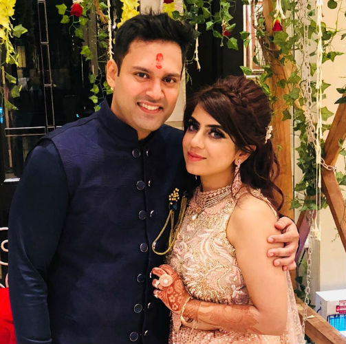

About Wedlock Matrimony
Our Matrimonial venture, wedlock Matrimony has been successfully building and nurturing matrimonial relationships for 12 years, bringing countless smiles and happy times to thousands of families.
Wedgate Matrimony’s management team has been associated with top service companies like SAMSUNG, NOKIA, COX & KINGS, etc. for 20 years at multiple locations.
We have renowned specialists with us who have pioneered in understanding human behaviour, psychology and remedial measures. This helps us in achieving quicker and desirable results. Altogether, we are serving about 600+ walk-in customers on a daily basis.
Our research and findings have helped us put together various processes at Wedgate Matrimony with a balanced combination of human efforts and technology. Understanding varied & complex needs, preferences and psychologies which go behind the brains searching for a so-called perfect alliance requires determined, focused and emotional handling.
Our key objective is to provide a personal touch to our clients, so we act more like family members than just a protocol-bound matrimonial firm . our team simultaneously works on important supporting factors like case study creation, profile creation, introduction writing, portfolio shoot, grooming, counselling, astro matching, availability of meeting lounges along with refreshments, presence of experienced moderators, before and after feedback, query resolution, personal touch from dedicated service coordinators, etc.
Due to our team’s consistent efforts, we have successfully concluded marriage decisions in as little as one week’s time for many of our clients. This can be considered a clear indicator of our dedication and understanding of the matchmaking process. Majority of our clients include elites, NRIs, upper class and upper middle class from all communities. However, our service is open to all walks of society.
We are inspired by strong ethical values. Though it is a professional enterprise but a deep sense of long term well being of our clients remains paramount for our entire team. We personally nurture and impart our best to every case.
Vision: We visualise ourselves as a reliable and trustworthy matrimonial matchmaking service preferential for people in every walk of life.
Mission: Our mission is to create the most suitable platform for all castes, age groups, genders and income groups, which helps people to find the right match and culminate an everlasting wedding bond. We consider matrimonial matchmaking an act of sanctity, and are dedicated to working hard to achieve the best results for our prospects.